Префектура Токусима · город Токусима · праздник
Ава-одори: танцевальный праздник, ради которого едут в Токусиму
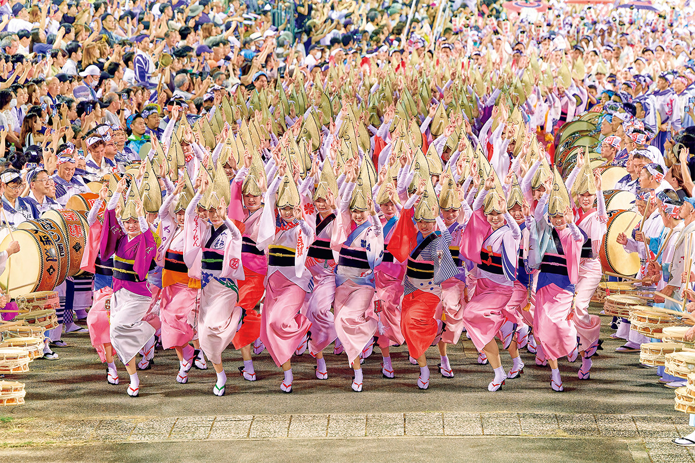
Летом город Токусима отдаётся танцу: колонны в плетёных шляпах, грохот барабанов, крики зрителей. Ава-одори идёт больше четырёхсот лет, и ради него сюда едут со всей Японии.
Праздник
Танец, который занимает весь город
Ава-одори проходит в городе Токусима, столице одноимённой префектуры на острове Сикоку. Эти места знамениты водоворотами Наруто, но летом всё затмевает танец. Ему больше четырёхсот лет, и он давно перерос границы префектуры: свои Ава-одори проводят в Канто, на Тохоку, на Хоккайдо и даже за рубежом. При этом здешний праздник остаётся и самым крупным, и самым первым: город Токусима, выросший вокруг замка, считается его родиной.
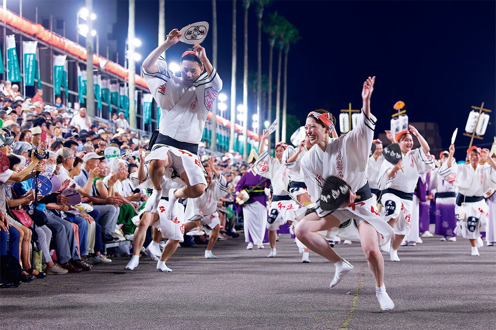
Группы танцоров называют рэн: есть старые, с долгой историей, есть студенческие и корпоративные, и всех не перечесть. Внутри рэн танец делят на мужской и женский, а музыку ведут барабаны, гонг, флейта и сямисэн в жёстком ритме. У каждого рэн свои темп, пластика и костюмы, и в этом главный интерес.
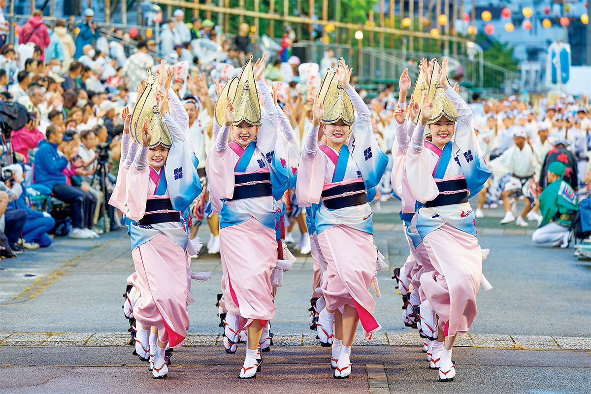
Праздник в Токусиме самый крупный из всех Ава-одори: здесь устроены платные сцены, где мощный групповой танец смотрят не торопясь. А на перекрытых улицах танцуют в кругу, и многие выбирают именно это: можно встать вплотную и разглядеть каждое движение.
История
От шествий простонародья до запретов
Танец сложился уже в первые десятилетия эпохи Эдо, но долго назывался просто «Бон-одори». Слово «Ава-одори» вошло в обиход лишь в XX веке: местный историк стал в начале эпохи Сёва настаивать на этом имени, и окончательно оно закрепилось уже после войны.
В хронике «Миёси-ки», которая рассказывает о возвышении и падении рода Миёси, правившего Ава в конце эпохи Сэнгоку, есть запись: в 1578 году правитель наблюдал в замковом городе за плясками простонародья. Это были «фурю одори», массовые ряженые шествия. Жители одной деревни шли строем в соседние края, пели модные песни и играли на флейтах и барабанах, а принявшая сторона выступала с ответным шествием. Такие шествия связывают со старым обычаем выпроваживать из своих мест духов болезней, и эта перекличка «туда и обратно» расходилась как пожар. Доходило до того, что и в Киото возбуждённые толпы врывались во дворец императора.
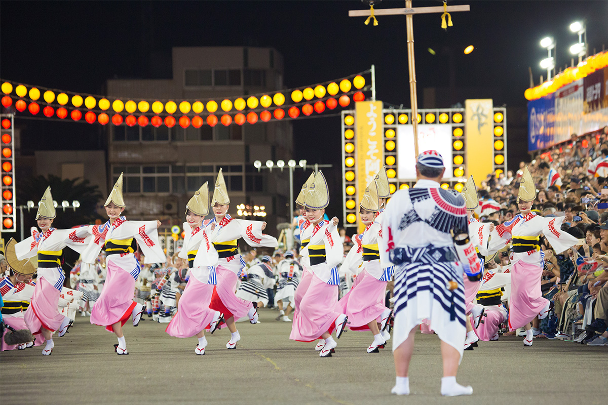
Власти боялись, что народное возбуждение обернётся смутой, и в эпоху Эдо не раз запрещали собираться большими группами и вести себя слишком ярко. Но танец каждый раз обходил запреты и менялся, и ограничения в итоге пошли ему на пользу: глядя на танцоров, зрители тоже захотели участвовать и повторять движения.
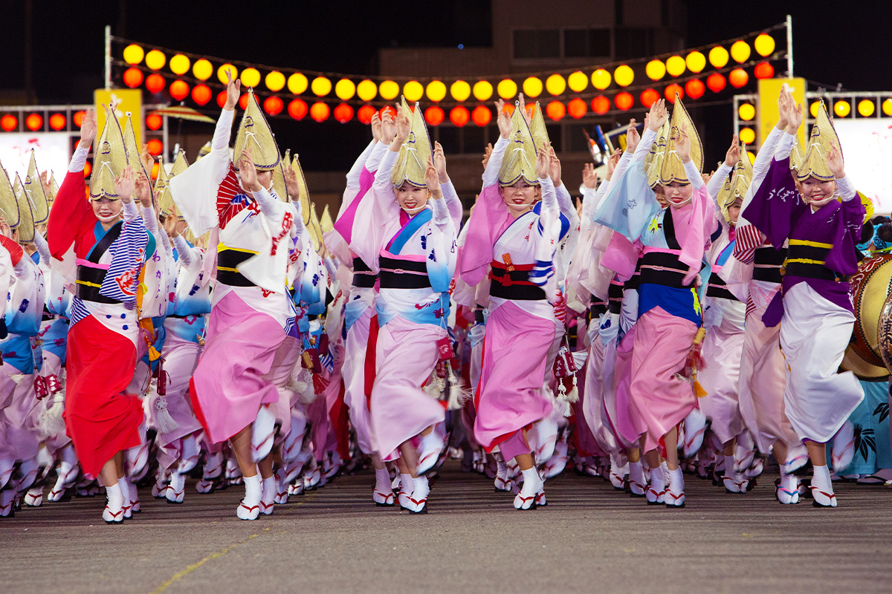
Техника
Как танцует рэн
Современный танец держится на простом ритме сямисэна и барабанов, а руки движутся в характерной манере. Простоту тоже придумали в ответ на ограничения: когда-то сто с лишним человек сходились в одну ватагу и соревновались в особо вычурных плясках, а после запретов шаг упростился, зато зрители легко повторяют его за танцорами.
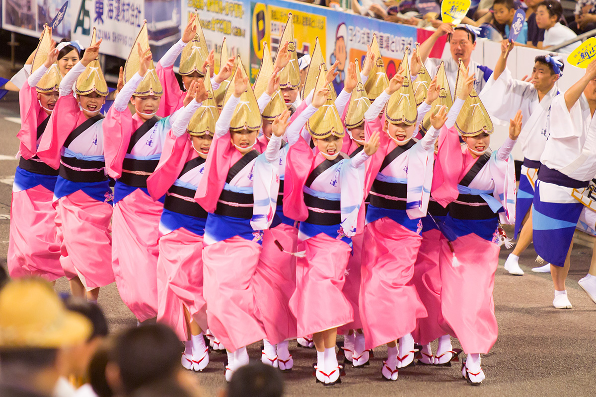
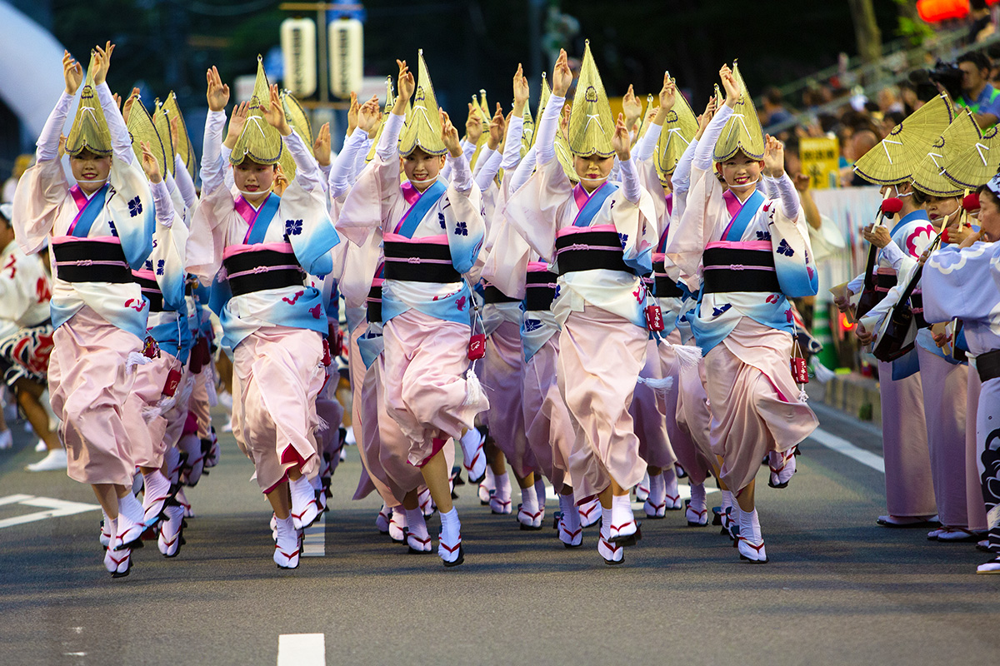
В основе движения низкая стойка и одновременный шаг правой рукой и правой ногой, левой рукой и левой ногой. Мужчины повязывают голову полотенцем, женщины надевают плетёную шляпу амигаса. Мелодию составляет старинная песня «ёсиконо», которую ведут флейта синобуэ, гонг канэ, задающий темп и управляющий рэн, а также большие и малые барабаны. Разница между рэн не только в па, но и в скорости: одни тянут движение, добиваясь полной слитности, другие несутся вперёд, показывая напор. По этой разнице рэн и узнают.
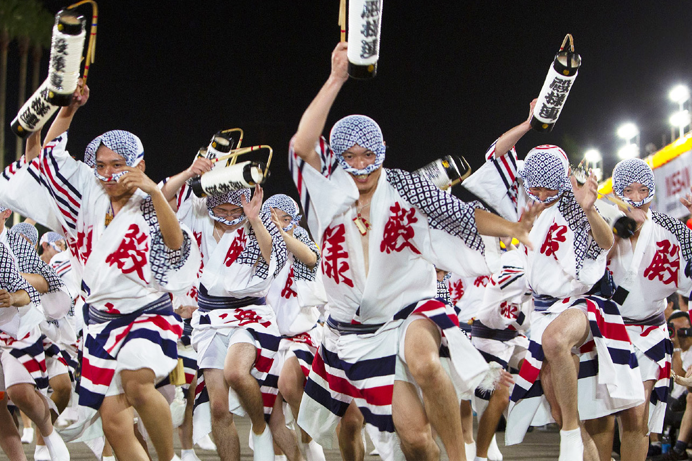
Финал
«Со-одори»: когда выходят все
Праздник длится четыре дня, и его пик это «со-одори», общий финальный танец. Несколько рэн выходят вместе и идут одним потоком: энергия танцоров бьёт через край, а на последний день в этом чувствуется особая, прощальная нота. В 2024 году общий танец принимала площадка в квартале Минамиутимати.
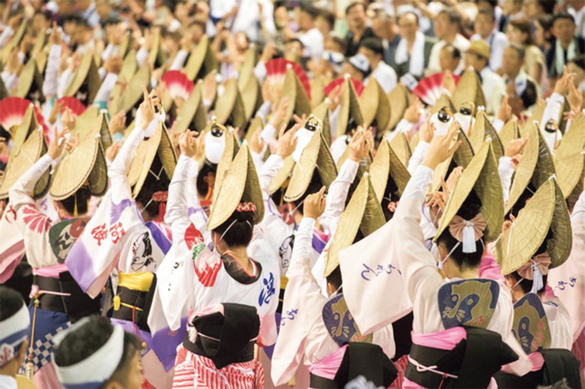
Ритм
«Наримоно»: чем звучит танец
Инструменты, которые ведут музыку праздника, называют общим словом «наримоно». Основу составляют гонг канэ, барабаны цудзуми, симэдайко и тайко, флейта и сямисэн. Вместе они играют лёгкий ритм «дзомэки», сохраняя традиционную мелодию, но подгоняя её под манеру конкретного рэн. Инструменты словно соревнуются в том, у кого выходит ярче.
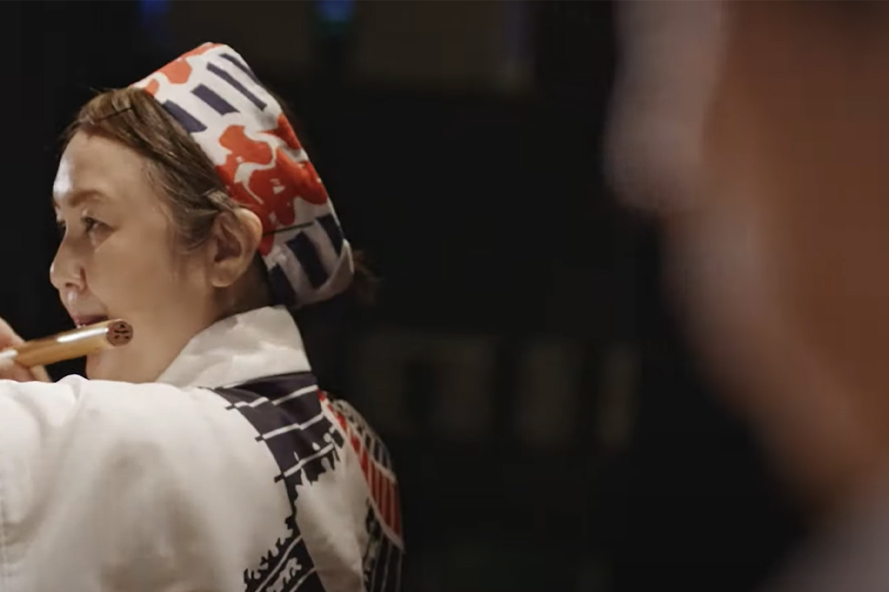
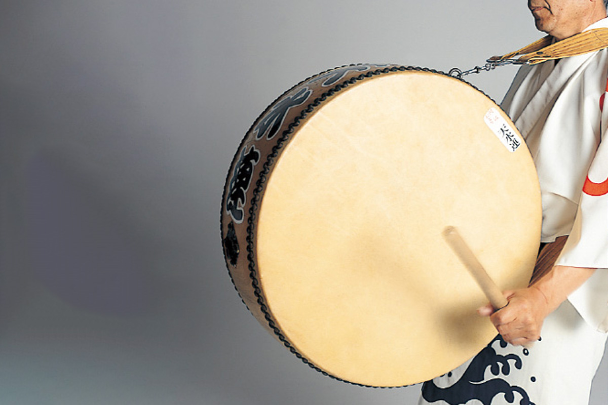
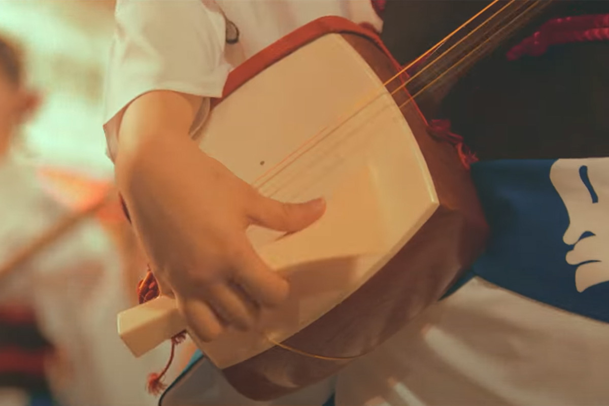
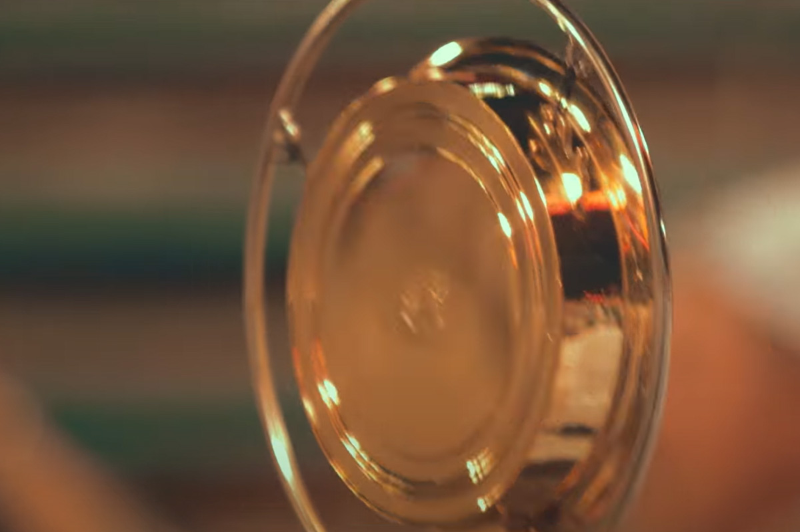
Город
Водоворот на улицах
В дни праздника весь центр Токусимы втягивается в танец: улицы перекрывают, трибуны заполняются доверху, и несколько дней город живёт под барабанный бой.
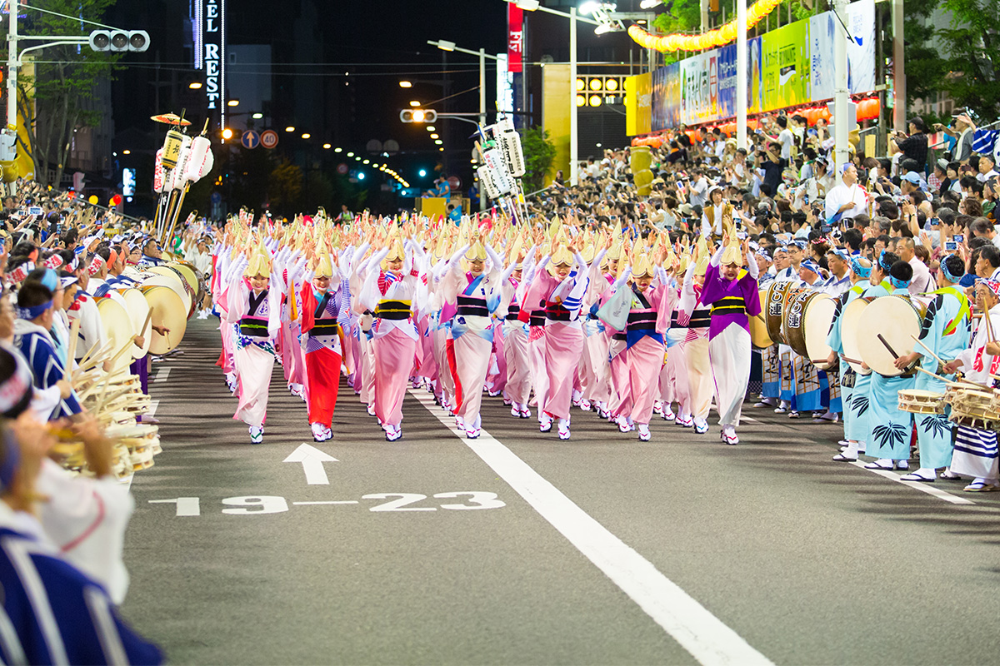
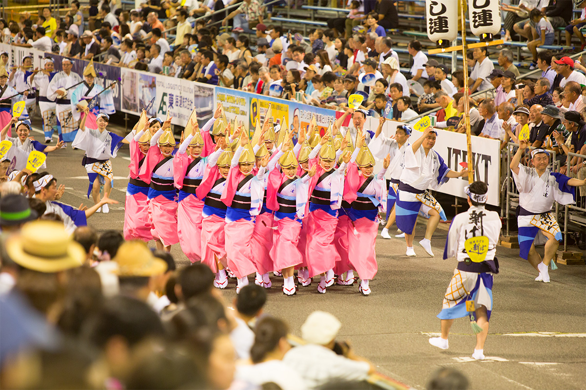
Зал
Танец круглый год: «Ава-одори кайкан»
Смотреть Ава-одори можно не только в августе. В центре города, в десяти минутах пешком от станции Токусима, работает «Ава-одори кайкан»: здесь есть музей истории танца, а в зале представления дают круглый год. На первом этаже продают ремесленные изделия и местные продукты, так что заглянуть стоит хотя бы раз. С пятого этажа кайкана уходит канатная дорога: до вершины горы Бидзан она поднимает примерно за шесть минут, а в ясный день оттуда видно до острова Авадзи и полуострова Кии.
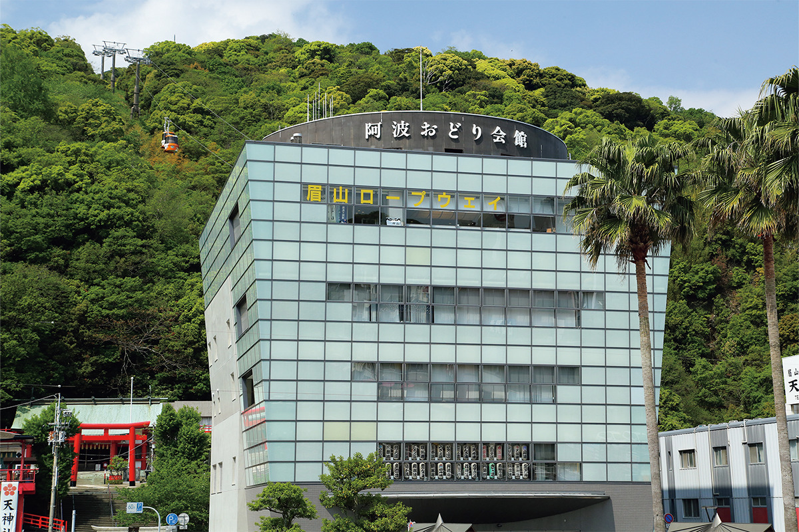
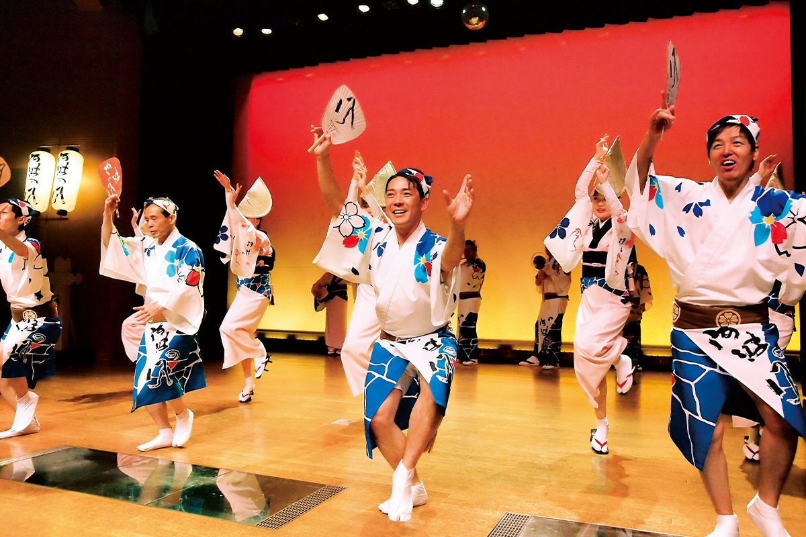
Ава-одори кайкан
- Адрес
- префектура Токусима, город Токусима, Синматибаси, 2-20
- Телефон
- +81 88-611-1611
- Дневные представления
- 11:00, 14:00, 15:00, 16:00 (по 40 минут)
- Вечерние представления
- 20:00 (50 минут, выступают известные рэн)
Ава-одори
- Место проведения
- центр города Токусима
- Дни проведения
- 11–15 августа (ежегодно)
- Организатор
- исполнительный комитет «Ава-одори в будущее»
- Телефон
- +81 88-678-5181
Фото: PIXTA, администрация города Токусима.